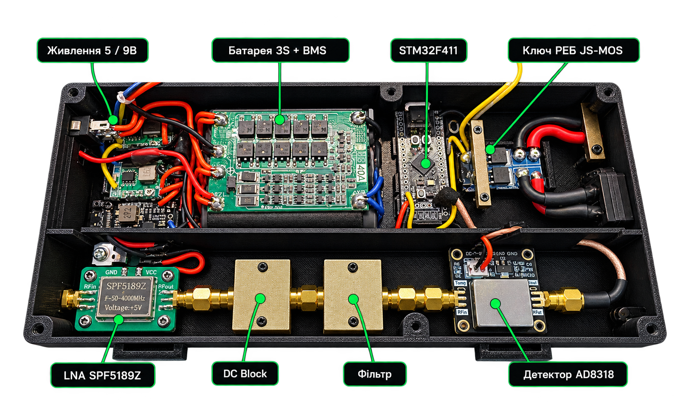

Protects our strike drones from FPV interceptors. Hears the interceptor's video link and jams it by itself.
DetectJamRepeat
What it does
Detect. Jam. Repeat. Automatically.
01
Listen
The detector listens to the air around our drone all the time.
02
Recognise
It tells an interceptor's video signal apart from Wi-Fi, phones and noise.
03
Jam
The jammer switches on automatically for 30 seconds.
04
Check again
It pauses, listens again and repeats while the interceptor is near.
A simple panel
Green light · interceptor detected (ELINT)
Red light · jammer is on (EW)
Timer · set how long the unit stays on, then it switches off by itself
Photo: a real alarm in the field, both lights on.
RIGHT&ABOVE · Compact EW System02 / 12
The system
One set: detector + jammer
EW antenna
EW 50 W amplifier
Battery
ELINT detector
EW amplifier
EW antenna
ELINT · the ears
Small box with its own battery and antenna. Decides when to jam.
EW · the voice
50 W jammer for the same band. Runs from its own battery pack.
One cable between them
The detector switches the jammer on and off.
RIGHT&ABOVE · Compact EW System03 / 12
Inside
Everything in one box

Power
Battery + protection
Controller
Jammer switch
Amplifier
Protection
Filter
Signal detector
Top row
Power, battery, the controller that makes the decision and the switch that fires the jammer.
Bottom row
The radio receiver: the signal goes left to right from the antenna to the detector.
Built from off-the-shelf modules. The next version puts them on one board.
Visualization based on a photo of the device
RIGHT&ABOVE · Compact EW System04 / 12
Design
Built for the field
Compact case
Ground test version. The flight version will be smaller.
Simple panel
On/off, timer and two status lights.
Plug and go
Antenna, jammer and battery connectors.
3D renders of the current case with the real panel
RIGHT&ABOVE · Compact EW System05 / 12
Where it fits
One core, many missions
Our strike drones
Onboard: blinds FPV interceptors.
Front-line positions
Dugouts, firing and command posts.
Vehicles
On the roof: protection on the move.
Infrastructure
Substations, bridges, fuel sites.
High-value equipment
Air-defence radars, artillery.
Depots and hubs
Ammunition stores, logistics points.
Tailored to each task
The same detector and logic. We change only what the job needs:
Bands
only the ones the threat uses
Jamming power
from a short-range module to 50 W
Antennas
all-round or aimed at a sector
Power
drone, 12/24 V vehicle, battery pack
Case
light, rugged or weather-proof
RIGHT&ABOVE · Compact EW System06 / 12
Our drones
UAV "ELF-K" (strike)
The "ELF-K" strike drone is designed to carry out a wide range of missions, including: engaging enemy personnel, lightly armored vehicles, electronic warfare systems, and enemy logistics centers. The drone is equipped with an automatic target acquisition and guidance system.
RIGHT&ABOVE · Compact EW System07 / 12
Our drones
UAV "ELF-P" (interceptor)
The "ELF-P" drone is designed to carry out tasks such as: interception of hostile drones, destruction of reconnaissance UAVs, weather balloons, aerostats, and meteorological probes with corner reflectors, as well as attacks on helicopters.
RIGHT&ABOVE · Compact EW System08 / 12
Our platforms
Ground platform
A modular unmanned ground platform designed for remote operation in high-risk environments. The system supports transport, logistics, surveillance, and other mission-specific applications while minimizing personnel exposure and improving operational efficiency.
RIGHT&ABOVE · Compact EW System09 / 12
Our platforms
Unmanned ground platform "HIMLI"
Unmanned ground platforms are remotely operated systems designed to perform a wide range of tasks in complex or hazardous environments where the use of personnel is risky or inefficient.